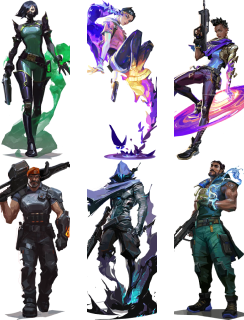

타격대
스킬과 실력을 통해 먼저 교전을 시작하고 적을 처치합니다.
척후대
다각도로 진입로를 확보하고 적 팀에 틈을 만들어냅니다.
감시자
지역을 점유하고 팀 엄호를 담당하는 수비 전문가입니다.
전략가
팀을 승리로 이끄는 데 탁월합니다.

한번만 더// 에피소드 9: 액트 3
게임을 한 번만 더 플레이해
컬리전의 마지막 액트를 기념해 보세요!
컬리전의 마지막 액트에서 신규 팀 데스매치 맵, 컬렉션을
업데이트해 줄 신규 스킨 시리즈, 요원 밸런스 변경 사항,
맵 업데이트, 신규 배틀패스, 게임 체인저스 챔피언십 등
다양한 콘텐츠를 만나보세요.
기념합니다. 바로 플레이어 여러분입니다. 5인 파티부터
듀오까지, 크리에이터부터 콘솔 플레이어 여러분까지,
발로란트를 멋진 게임으로 만드는 건 바로 플레이어
여러분입니다. 에피소드 9: 액트 lll가 지금 시작됩니다!
발로란트 x 아케인: 시즌 2 아케인 컬렉터 세트가
찾아왔습니다
한정판 세트에 대해 알아야 할 모든 것
을 정리했습니다.
발로란트 9.10 패치 노트
감시자, 전략가 및 피닉스 업데이트,
보호막 회복 추가, 게임플레이 체계 변경 등
다양한 내용을 준비했습니다.
한 번만 더 // 에피소드 9: 액트 III
컬리전의 마지막 액트에서 신규 스킨 시리즈,
연말 패치 등 다양한 콘텐츠를 만나 보세요.